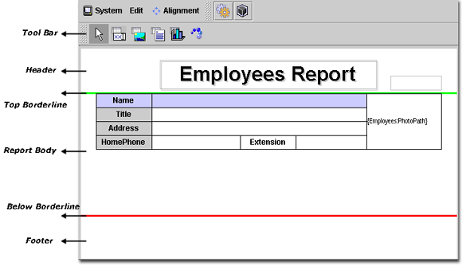
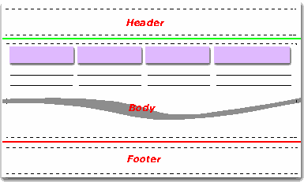
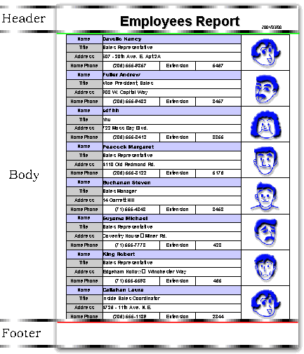
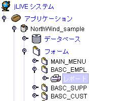
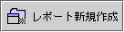
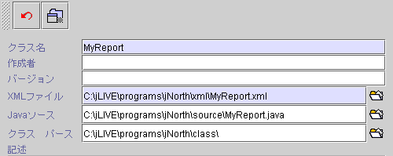
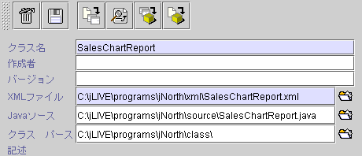
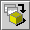

|

7. レポートシステム (report system)
印刷フローとメカニズム
(printing flow and
mechanical)
新規レポート (create new report)
レポート管理 (report arrangement)
レポートプロパティ (report properties)
jLIVE Builder™
アプリケーションの中で一つフォームに多数のレポートを作成することが可能です。レポート設計環境の中，実際レポート用紙のサイズにより，へッダ
(header)、内容 (content)、フッタ
(footer) ３つの部分に分けられています。各部分に緑線 (header
line)、赤線 (footer line) に分割し，どの部分にもコンポーネントの配置が可能です。

-
ヘッダとフッタ (header and footer)
この二つ部分は静的な部分で，その中のコンポーネントが一回印刷されるのみとなり，次のページも一回のみに印刷されます。ページ数の表示が自動に追加されます。
普通はレポート名、会社 logo、時間表示などに使われます。
-
内容 (content)
この部分は資料印刷リスティングの部分で，レポートシステムは印刷されるコンポーネントのトータル高さを自動的に計算ができます，ページチェンジエリアーと
Freeze bounds
プロパティ持ちのコンポネントが除かれます。



印刷フローメカニズム (printing flow and
mechanical)
以下は印刷作業フロー：
-
現在データソース
(data source) のレコード位置をマークします ( record number )。
-
データソースを優先にし，データソースの
before fetch及び after fetchイベント(Event)を起動します。
-
内容
( content )部分中の印刷コンポーネント ( printable components )
のトータル高さを計算します。
-
印刷コンポーネント(
printable components )
トータルページ数を表示したい場合，データソース検索量によってトータルページ数を予測します。
-
ヘッド ( header
) を印刷します。
-
内容( content )
を印刷します。
-
ページチェンジタイミングをチェックし，フッタ(
footer ) を印刷し，ページチェンジします。
-
データソース検索が最終になったかどうか
( EOF )をチェックし，最終の場合に，フッタ(
footer ) を印刷して作業を終了します。
-
残りの空間には次の検索結果が入るかどうかをチェックします。空間不足の場合，フッタ
( footer ) ）を印刷してページチェンジします。
-
次のデータソース(
data source )検索に移り，前後イベント
( event )を起動します。
-
内容 (
content )印刷が続きます。
-
フッタ ( footer
)を印刷します。
-
データソース検索が最終になったかどうか
( EOF )をチェックし，最終になっていない場合，ページチェンジしてヘッダ
( header) を印刷します。
-
データソース
( data source )が前マークされた位置に戻り ( record number)，前後イベント
( event )を起動します。
-
レポート印刷作業終了。
jLIVE Builder™
一般コンポーネント印刷 ( generic printable component )機能 ：
-
印刷制限 (print
constraint) フォーミュラ (formula)
で印刷是非判別。
-
類別でコネクション、印刷資料の読み取り。
-
外枠印刷。
-
フォーミュラプロセス
(formula)，結果集印刷。
-
累計
(sum) 、リセット (reset to zero)需要。
▲Top
7.1
新規レポート
(create new report)

【レポート】節をクリックし，右下の
新規 
( 新規レポート )
をクリックします。設定画面が表示されます。Class
名はデフォルトで MyReport ，編集可能になっています。


-
取消  ( 新規取り消し )
( 新規取り消し )
-
新規  ( レポート新規 )
( レポート新規 )
-
削除
( レポート削除 )
-
保存
( レポート設定保存 )
-
作成
( Java™ ソースコードへ Xml --> Java ) XMLは Java™ ソースコード
を作成。
-
一覧  ( Java™ ソースコード一覧 ) Java™ ソースコード一覧。
( Java™ ソースコード一覧 ) Java™ ソースコード一覧。
-
コンパイル 
( Java™ Java --> class )
compile Java™
ソースコードのコンパイル。
-
ビルド
( class Xml --> Java --> class ) XML から Java™
ソースコードへ転換し，更に class にコンパイル。
-
Class 名 (class name)：レポート名，名前に空白が含まれないこと。レポート名はコンパイル後のクラス名と同じ。
-
作者 (author)：作者，空白可能。
-
バージョン
(version)：バージョン別，空白可能。
-
Xml ファイル
(XML)：jLIVE Builder™
レポート設計内容が記録されている XML
ファイル。
-
Java™
程式
(Java™
source)：Java™
アプリが保存されるフォルダーと名前。
-
Class パス
(class path)：クラスが保存されるパスと名前。
▲Top
Copyright © 2001~
2004 Probe Technology . All Rights Reserved.
Questions, comments,
and suggestions to Service@probe.com.tw
|